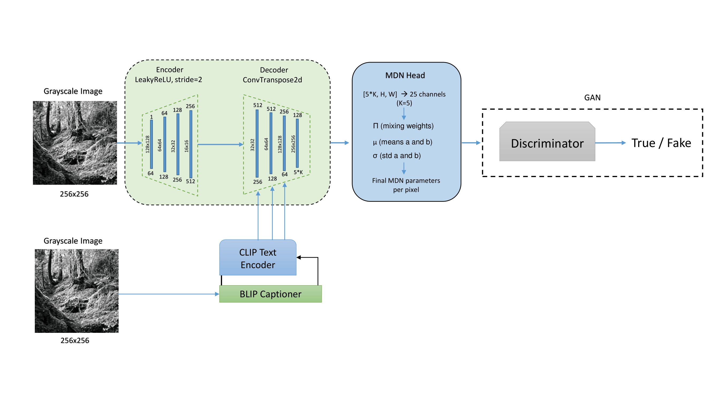
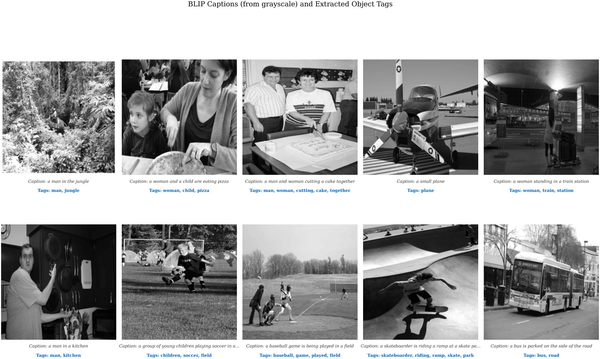
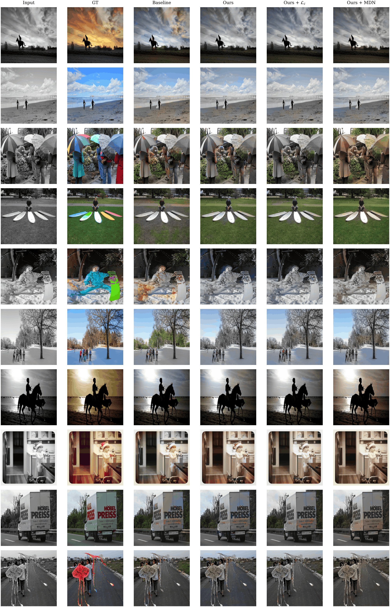
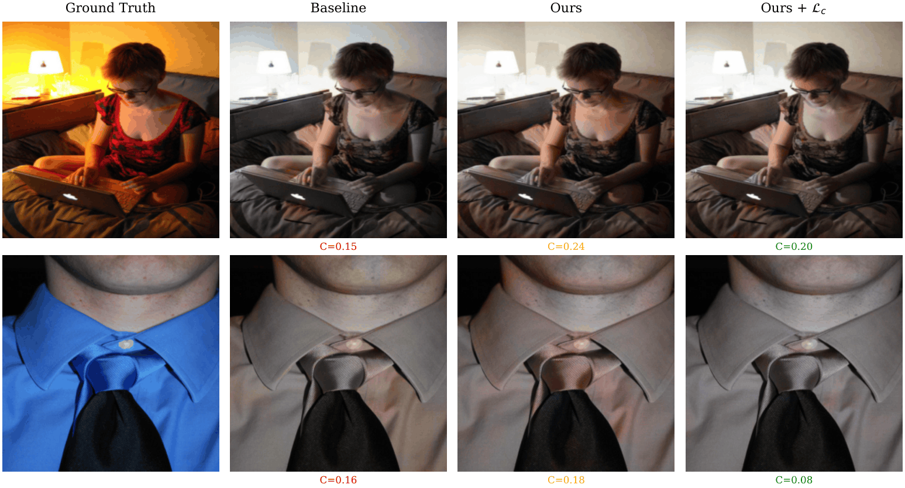
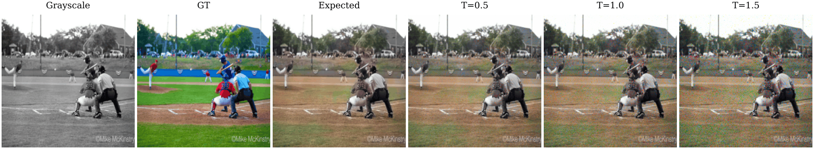
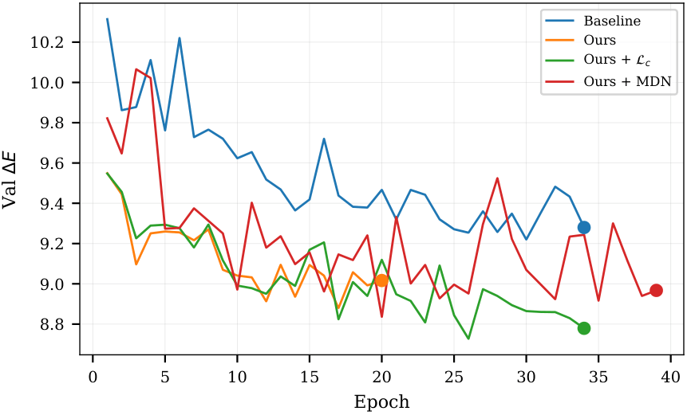
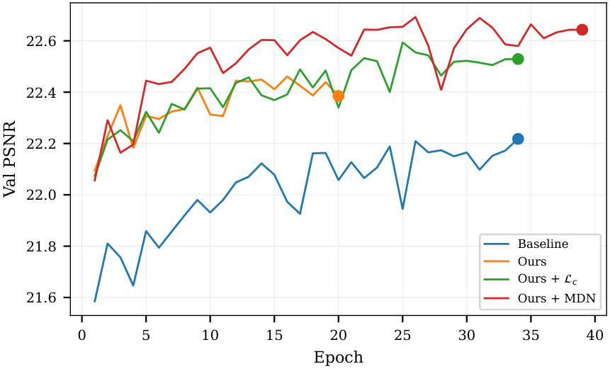

Grayscale image colorization is an inherently ambiguous mapping problem: a single luminance value can correspond to many plausible colors. To resolve this ambiguity, we investigate two complementary mechanisms — semantic text conditioning via automatically generated image captions, and probabilistic output modeling via a Mixture Density Network (MDN). We compare four model variants on a COCO 2017 subset across multiple perceptual metrics to characterise the trade-offs between pixel-level fidelity and distributional realism. Although multimodal color distributions are typically difficult to model in a regression framework, the combination of caption-guided conditioning with an MDN output head is effective in reducing color ambiguity.
Pixel-only regression objectives collapse to the conditional mean — washed-out, brownish outputs. Image colorization is ill-posed: a grayscale photograph of a car carries no signal about whether the vehicle was red, blue, or green. Visual cues alone often fail in regions of high color uncertainty such as clothing and vegetation. Our hypothesis is that natural-language captions generated from the grayscale input can inject semantic context that pixels alone cannot, guiding color prediction in ambiguous regions.
The pipeline combines semantic conditioning with probabilistic decoding. A BLIP captioner describes the grayscale input; CLIP encodes the caption into a 512-d embedding, which is injected into a U-Net decoder via cross-attention. An MDN head predicts a per-pixel K=5 Gaussian mixture over (a, b) chrominance space (π, μ, σ), while a 70×70 PatchGAN discriminator provides adversarial supervision on the final RGB output.

TextConditionedBlock consuming 512-d CLIP token embeddings.
Each block applies cross-attention followed by FiLM modulation:
Both linear FiLM layers are zero-initialised so text influence starts at zero, then grows during training.
Per pixel the head emits K Gaussian components for (a, b); the loss is the negative log-likelihood:
K = 5 components captures multi-modal color distributions instead of collapsing to a single point.
UNetColorizer, regression head.UNetTextColorizer with cross-attention in Dec1 (token_attn), regression head.𝓛c = ‖|Cpred| − |Cgt|‖1.multiscale_film), K=5 MDN head.Each grayscale image is described by BLIP, encoded by CLIP, and used to condition the U-Net decoder. The model learns associations such as "jungle" implies green, "road" implies grey, "soccer" implies grass and skin.

Side-by-side comparison across five semantic categories. Text-conditioned models produce more realistic colors in snow and vegetation rows. Ours + 𝓛c delivers the clearest chroma improvements in green vegetation and blue sky regions; urban scenes look similar across all models.

| Model | Text | 𝓛c | Head | PSNR ↑ | SSIM ↑ | ΔE ↓ | FID ↓ |
|---|---|---|---|---|---|---|---|
| Baseline | ✗ | ✗ | Reg | 22.03 | 0.9155 | 9.31 | 47.7 |
| Ours | ✓ | ✗ | Reg | 22.23 | 0.9193 | 8.98 | 45.8 |
| Ours + 𝓛c | ✓ | ✓ | Reg | 22.35 | 0.9223 | 8.80 | 43.3 |
| Ours + MDN | ✓ | ✗ | MDN | 22.53 | 0.9273 | 9.02 | 55.8 |
| Δ (Ours − Baseline) | +0.20 | +0.0038 | −0.33 | −1.9 |
Text conditioning improves PSNR (+0.20 dB), SSIM (+0.0038), ΔE (−0.33) and FID (−1.9). Chroma loss reaches the lowest FID (43.3); the MDN head reaches the highest PSNR (22.53 dB).
| Category | N | Baseline | Ours | + 𝓛c | + MDN | Best Δ |
|---|---|---|---|---|---|---|
| Snow | 8 | 8.21 | 7.46 | 6.91 | 6.52 | −20.6% |
| Vegetation | 8 | 9.43 | 8.26 | 7.66 | 8.59 | −18.8% |
| Animals | 8 | 9.99 | 9.15 | 9.20 | 8.92 | −10.7% |
| Sky | 8 | 8.19 | 8.13 | 7.82 | 8.02 | −4.5% |
| Urban | 8 | 7.05 | 7.17 | 7.03 | 7.84 | −0.2% |
Caption guidance helps most in semantically-rich categories with concentrated color statistics (snow, vegetation, animals). Urban scenes are essentially achromatic structure — text adds little.
The baseline frequently suffers from chroma collapse: predicted saturation drops well below the ground truth, producing the characteristic washed-out look of regression colorizers. The chroma loss 𝓛c directly penalises this mismatch and recovers a saturation ratio close to 1.0.

Unlike a regression head, the MDN exposes the underlying multi-modal distribution. Sampling temperature controls the trade-off between conservative outputs (T = 0.5) and bolder color choices (T = 1.5). Expected-value decoding gives the best pixel-level fidelity; sampling-based decoding gives the highest chroma at the cost of PSNR.

| Decoding | PSNR ↑ | SSIM ↑ | LPIPS ↓ | ΔE ↓ | Chroma ↑ |
|---|---|---|---|---|---|
| 𝔼[ab] (Expected) | 22.53 | 0.9273 | 0.164 | 9.02 | 0.638 |
| MAP (arg max π) | 22.13 | 0.9148 | 0.181 | 8.83 | 0.504 |
| Best-of-5 | 19.91 | 0.6083 | 0.258 | 12.07 | 0.963 |
| Sample (T = 1.0) | 19.91 | 0.6082 | 0.258 | 12.07 | 0.963 |


Text-conditioned models converge faster; the baseline plateaus around epoch 15. The MDN model trains with wider variance but ultimately reaches the highest PSNR.
Text helps where color ambiguity is high — snow (−20.6%), vegetation (−18.8%), animals (−10.7%). Urban scenes (−0.2%) gain almost nothing: color there is determined by structural, not semantic, context.
Expected-value MDN decoding maximises pixel metrics but degrades FID (55.8) by averaging the K components. 𝓛c produces the most realistic color distribution (FID 43.3). Color accuracy and distributional realism are competing objectives.
Sampling-based decoding sacrifices pixel-level accuracy but reaches near-original chroma (0.963). This makes the MDN particularly suitable for photo restoration and artistic re-interpretation.
We presented a caption-guided colorization framework combining BLIP captioning, CLIP text embeddings, and cross-attention conditioning with a probabilistic MDN output head. Experiments on COCO 2017 show that caption guidance improves all metrics over the baseline, with the largest gains in semantically constrained categories. Chroma loss maximises distributional realism (FID 43.3), while the MDN head maximises pixel fidelity (PSNR 22.53 dB) and enables diverse colorization sampling. These results confirm that language can effectively reduce color ambiguity where pixels alone cannot. Future work will explore stronger language models, class-conditional MDN components and human evaluation protocols.